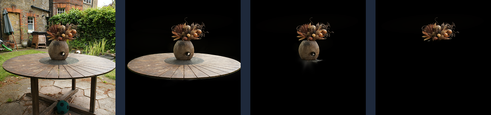

3D Gaussian Splatting (3DGS) has revolutionized real-time rendering, but converting these Gaussians into interac- tive game assets remains a significant challenge. Recent methods attempt to address this by distilling semantic features during the computationally expensive training phase. However, these “black- box” approaches are pipeline-dependent and effectively remove the artist from the loop by treating asset definition as a rigid classification problem rather than a creative decision.
In this paper, we propose a model-agnostic, artist-centric segmentation tool that restores control to artists and game developers. Unlike prior work, our approach operates directly on pre-compiled 3DGS assets, leveraging fast GPU-accelerated geometric cluster- ing as a “co-pilot” for the user. We demonstrate that this strong clustering initialization enables users to interactively isolate, clean, and extract complex objects in minutes (∼3 minutes in our study). Crucially, this approach empowers users to semantically decompose objects into their functional components, expanding the possibilities for interactive game design. Furthermore, we validate the system’s efficiency and user-friendliness through a formal user study, achieving a System Usability Scale (SUS) score of 70, demonstrating above-average usability for an early- stage prototype. Ultimately, we present an interactive workflow that prioritizes rapid iteration, universal compatibility, and the validation of human agency as the ultimate arbiter of asset definition.
.ply files without expensive retraining.If you find our work useful in your research, please consider citing:
@inproceedings{barazandeh2026splat,
title={Splat, Click, Asset: An Artist-Centric Segmentation Pipeline for Gaussian Splats},
author={Barazandeh, Danial and Dehghanpour, Alireza and Zachmann, Gabriel},
booktitle={2026 IEEE Conference on Games (CoG)},
year={2026},
organization={IEEE},
note={To appear}
}